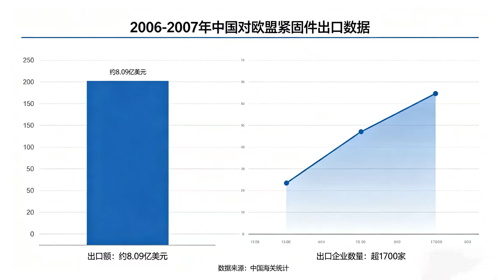

Neuigkeiten und Updates
Brancheneinblicke, Unternehmensmeldungen und Aktuelles von WT Fasteners
Brancheneinblicke, Unternehmensmeldungen und Aktuelles von WT Fasteners

Steigende Rohstoffkosten, eskalierende internationale Handelsstreitigkeiten und der Druck zur Transformation von der Low-End- zur High-End-Fertigung gestalten die Befestigungsmittelindustrie neu. Dieser Artikel analysiert die zentralen Herausforderungen und zeigt strategische Chancen für nachhaltiges Wachstum auf.
Mehr lesen ->
Am 9. November 2007 leitete die EU eine Anti-Dumping-Untersuchung zu chinesischen Befestigungselementen ein. Der Fall betraf über 1.700 Unternehmen und Exporte im Wert von 575 Mio. €. Historischer Han
Mehr lesen ->
Ab dem 6. April 2026 ändern die USA die Section-232-Zollregeln für Stahl- und Aluminiumderivatprodukte. Die Steuerbasis für Befestigungselemente wechselt vom Metallgehalt zum Gesamtproduktwert, was di
Mehr lesen ->
April 2026: Guangzhou Sourcing Fair und Yiwu Hardware Expo schaffen einen Dual-Core-Handelskorridor für die Befestigungsindustrie. Erfahren Sie, wie Unternehmen von dieser konzentrierten Handelsaktivi
Mehr lesen ->WT Fasteners ist ein führender Hersteller und Exporteur von hochwertigen Bolzen, Schrauben, Unterlegscheiben und maßgeschneiderten Befestigungselementen. Bedient seit 2005 globale Märkte mit ISO-zerti
Mehr lesen ->